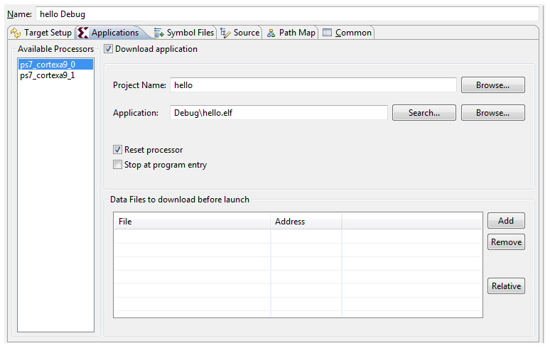

System Debugger Limitations, Known Issues, and FAQs
Frequently Asked Questions
In which scenario should I use Xilinx® System Debugger or Xilinx C/C++ Debugger (XMD+GDB)?
It is preferable to use the Xilinx C++ application, System Debugger. Use Xilinx C/C++ Debugger (GDB) when you want to debug Linux applications.
By default, the Xilinx System Debugger starts at Application entry (main()). How can I tell Xilinx System debugger to start at program entry?
If you wish to start debugging from program entry, enable the Stop at program entry checkbox in the debug configuration, as shown below..

Debug after re-launch does not stop on breakpoints.
SDK does a processor reset on every debug session. The interrupt controller is not reset during processor reset. Change the reset type to System Reset in Target Setup tab of debug configuration, as shown below.

Note: This is applicable only if you terminate a debug session while the processor is in interrupt context.
Xilinx C/C++ Debugger (GDB) debugger hangs when the Disassembly view is open.
The workaround is to close the Disassembly view and proceed with debugging.
I am getting the error below while debugging an application.

The workaround for this issue is to restart the board. This issue will be resolved in the next release.
Global variables are not displayed with Xilinx-customized System Debugger.
Hover the mouse on the global variable to see the value of the global variable or use Xilinx Standard debugger (XMD) to see the global variables values.
Cannot perform standalone profiling with Xilinx-customized System Debugger.
Use Xilinx Standard debugger to profile the Standalone applications.
Why is it that I cannot set more than 5 breakpoints/watchpoints with the System Debugger?
Internally a breakpoint/watchpoint planted by user is treated as Hardware breakpoints in System Debugger. For ARM there is a limitation of 6 Hardware breakpoints. Out of 6, one breakpoint is used for the single stepping, other breakpoint is used for stopping at main(). So users are left with four breakpoints. Software breakpoints (No limitation on number of breakpoints) support will be added in next release.
Cannot perform standalone profiling with Xilinx-customized System Debugger.
Use Xilinx Standard debugger to profile the Standalone applications.
Debug after re-launch does not stop on breakpoints.
SDK does processor reset on every debug session. The Interrupt Controller is not reset during Processor reset. Change the reset type to System Reset in the Device Initialization tab of debug configuration.